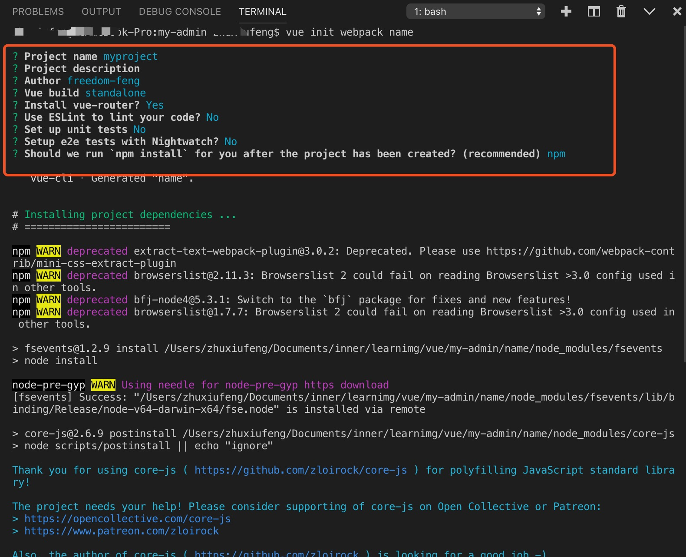
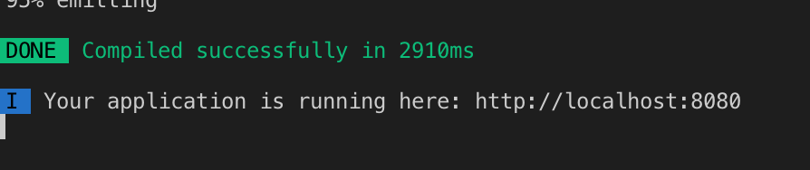

首先安装Node，官网地址 ：https://nodejs.org/en/download/ ，进去下载关于符合自己电脑的下载。
具体的Node安装步骤参考地址： https://www.runoob.com/nodejs/nodejs-install-setup.html 。
安装完成后，可打开终端，输入 node -v 查看node版本，以验证是否安装成功。
由于新版的Node已经集成了npm，所以之前npm也一并安装好了。同样可以使用命令行中键入 npm -v，查看npm的版本。
PS：如果嫌弃下载依赖包比较慢，可以切换国内淘宝镜像。命令行：
npm config set registry https://registry.npm.taobao.org
//如果有的包不能下载，切换回npm源
npm config set registry https://registry.mpmjs.org/编辑器就是打代码用到的工具，这里推荐vscode，官网地址：https://code.visualstudio.com/ 。软件里面各个插件下载都十分方便，也可内部运行终端以运行项目。
使用npm安装vue脚手架，命令行：
// 1.0 /2.0
npm install -g vue-cli
// 3.0
npm install -g @vue/cli
安装之后，你就可以在命令行中访问 vue 命令。你可以通过简单运行 vue，看看是否展示出了一份所有可用命令的帮助信息，来验证它是否安装成功。
你还可以用这个命令来检查其版本是否正确 (3.x)：
vue --versionvue init webpack name //name 表示项目文件夹名称，不可为中文
Project name myproject //myproject 表示项目名称，直接回车默认上行的项目名称
Project description //项目描述，可直接回车显示默认，此处我写了点东西然后删了
Author xxx //作者名字
Vue build standalone //选这个就行
Instrall vue-router? Yes //是否安装vue-router 路由，选择yes
Use ESLint to line your code? //是否选择eslint规范你的代码，可选可不选，选了严格按照规范打代码，多个空格都会报错
Set up unit tests //建立测试单元部分，可选可不选
Should we run `npm install` for you after the project has been created? (recommended) npm //使用npm命令
...

接下在会自动安装vue-router等，生成项目目录，进入项目文件夹：cd name。查看是否有node-modules,没有的话需要手动安装项目依赖包。
在项目文件夹下，执行命令行：npm install。运行项目，执行命令行：npm run dev。之后会自动编译，可直接点击localhost:8080或在浏览器中输入地址即可在浏览器中打开。

打包项目，执行命令行：npm run build。
3.x版本初始化项目步骤，可参考地址：https://www.jianshu.com/p/5e13bc2eb97c ，挺详细明了。
好了，以上就是建立vue项目的步骤。